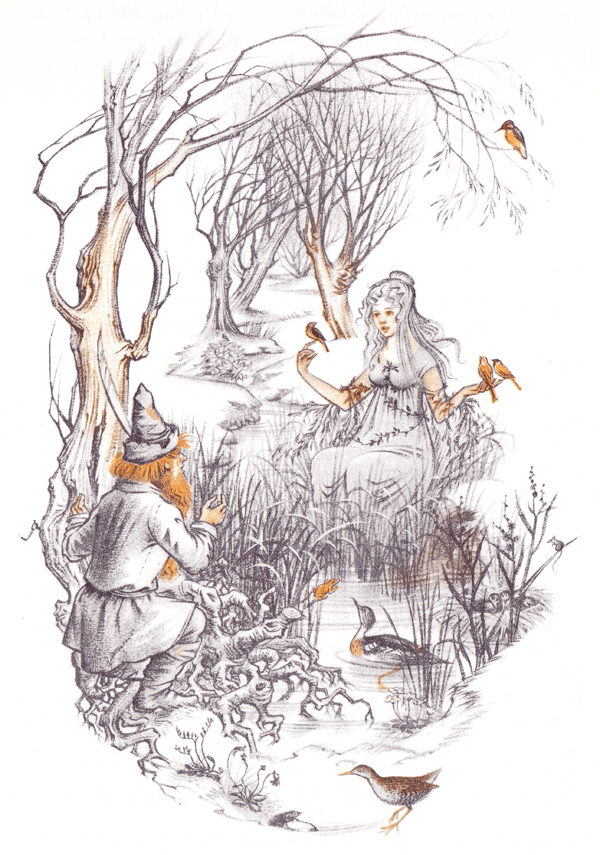

علی زِمانی
یادداشت های پراکنده از یک تکنولوژیست جوان و خردمند
- توضیحات تصویر : تام بامبادیل (opens new window) نام شخصیتی است در رشته داستانهای تالکین (opens new window). در جلد اول سهگانهٔ ارباب حلقهها (opens new window)، فرودو (opens new window) و همراهانش او را در جنگل کهن (opens new window) ملاقات میکنند. اینطور به نظر میآید که قدرت حلقه یگانه (opens new window) بر روی او اثری ندارد.
- او به همراه همسرش گلدبری، دختر رودخانه، در ویتیویندل زندگی میکنند. در کتاب او با نام «ارباب درختان، آبها و تپهها» معرفی شدهاست. در پشت ظاهر سادهٔ تام بامبادیل دانش و قدرتی عظیم قرار دارد ولی در محدوده قلمرو خودش.